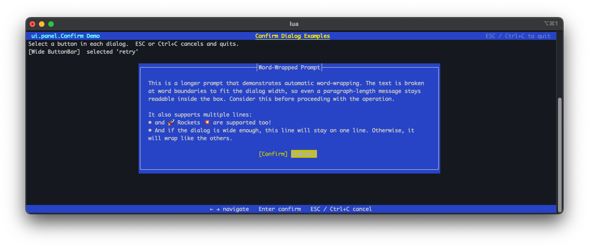
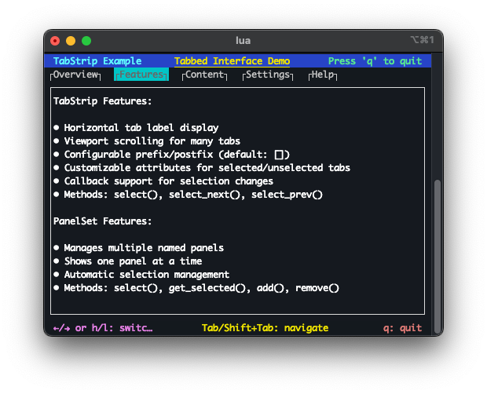

5. Full-screen UI
The full-screen UI system is built around a flexible panel framework. Panels are rectangular regions of the terminal that manage their own rendering and layout. The framework handles automatic sizing and positioning so individual panels don't need to track terminal dimensions manually.

Screen — ui.panel.Screen
ui.panel.Screen is the root container for a full-screen UI. It manages terminal resize events and reflows the layout accordingly. All other panels are attached to and rendered through a Screen.
See the ui.panel.Screen class reference for the full API.
Header panel — ui.panel.Bar
ui.panel.bar renders a single fixed-height row, typically used as a title bar at the top of the screen. It supports colored backgrounds and formatted text.
See the ui.panel.Bar class reference for the full API.
Footer and key-shortcut panels — ui.panel.Bar, ui.panel.KeyBar
Footer panels work the same way as header panels and are typically placed at the bottom of the screen. ui.panel.KeyBar is a specialization that renders a row of labelled keyboard shortcuts.
See the ui.panel.KeyBar class reference for the full API.
Dialogs — ui.panel.Confirm
ui.panel.Confirm displays confirmation prompts. Prompt text can be multi-line with automatic word-wrapping.
See the ui.panel.Confirm class reference for the full API.

Text layout panel — ui.panel.Text
ui.panel.Text displays scrollable, word-wrapped text content. It supports selectors for navigating and highlighting lines or regions within the panel.
See the ui.panel.Text class reference for the full API.
Tab-strip panel — ui.panel.TabStrip
ui.panel.TabStrip renders a horizontal row of tabs. Selecting a tab can drive which content panel is shown, providing a familiar tabbed-interface pattern.
See the ui.panel.TabStrip class reference for the full API.
